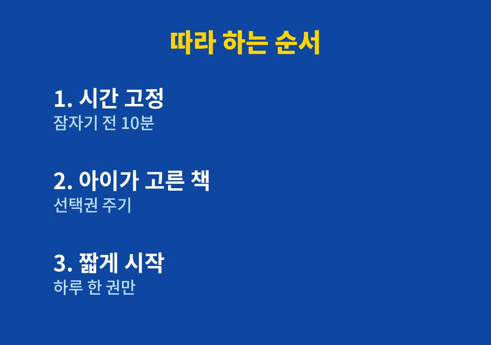

아이 독서 습관 만들기, 실제로 해 볼 수 있는 순서로 담았다.
아이에게 책을 읽어 주려고 하면 도망가거나 딴짓을 해서 고민인 부모라면 끝까지 읽어 볼 만하다.
온라인 쇼핑몰을 운영하며 두 아이를 키우는 아빠로서 퇴근 후 짧은 시간에 직접 해본 방법을 정리했다.
아이의 성향과 나이에 따라 결과는 다를 수 있으며, 의학적 판단이 필요한 문제는 소아청소년과나 전문가와 상담해야 한다.
처음에는 책만 잘 골라 주면 아이가 알아서 읽을 거라고 생각했다.
그래서 추천 도서 목록을 찾아 한꺼번에 사 주었지만 아이는 표지만 한 번 보고 덮어 버렸다.
책장에는 새 책이 쌓였고 나는 점점 조급해졌다.
자리에 앉혀 놓고 읽으라고 말할수록 아이는 책을 숙제로 받아들이는 듯했다.
그때서야 문제는 책의 수준이 아니라 읽는 시간의 분위기라는 생각이 들었다.
며칠 동안 아이가 언제 가장 차분한지 지켜보았더니 불을 끄기 직전 이불 속에서 가장 느긋했다.
낮에는 놀이에 정신이 팔려 있지만 잠자리에서는 오히려 이야기를 듣고 싶어 하는 모습을 보였다.
| 시도한 방법 | 아이 반응 | 내 판단 |
| 낮에 책상에 앉혀 읽기 | 금방 일어남 | 효과 적음 |
| 전집을 한꺼번에 구입 | 관심 없음 | 부담만 커짐 |
| 잠자기 전 이불 속 읽기 | 끝까지 들음 | 계속 유지 |
표로 적어 보니 아이에게 맞지 않았던 것은 책이 아니라 시간과 방식이었다.
잠자기 전 십 분을 책 읽는 시간으로 정하고, 처음에는 한 권만 읽어 주었다.
길게 읽지 않으니 아이도 나도 부담이 없었고, 끝날 때 더 읽고 싶다는 마음이 남았다.
그날 읽을 책은 책장에서 아이가 직접 고르게 했다.
같은 책을 여러 번 골라도 말리지 않았고, 반복해서 읽는 것도 아이에게는 의미 있는 시간이라고 생각했다.
읽은 뒤에 내용을 확인하는 질문을 하지 않고, 아이가 먼저 말을 꺼낼 때만 대답해 주었다.
시험처럼 느끼지 않게 하는 것이 중요하다고 느꼈다.
몇 주가 지나자 잠자리에 들기 전 아이가 먼저 책을 골라 들고 오는 날이 늘었다.
물론 피곤한 날에는 건너뛰기도 했는데, 그럴 때 억지로 이어 가지 않는 것이 오히려 오래 가는 비결이었다.
다른 집 아이와 비교하면 마음이 흔들리기 쉽다.
아이마다 흥미를 느끼는 시기와 방식이 다르므로, 우리 아이의 속도를 기준으로 삼는 것이 좋다고 생각한다.
아이에게만 읽으라고 하지 않고 나도 같은 시간에 책을 펼쳐 보았다.
그러자 아이가 내가 무엇을 읽는지 궁금해하며 옆에 와서 앉는 일이 생겼다.
말로 하는 권유보다 보여 주는 모습이 더 큰 영향을 준다는 점을 실감했다.
잠자리에서는 텔레비전과 휴대폰을 멀리 두고 작은 조명 하나만 켜 두었다.
주변이 조용해지니 아이도 책 속 이야기에 집중하기 쉬워 보였다.

1. 아이가 가장 편안한 시간대를 며칠 동안 관찰한다.
2. 그 시간에 십 분만 책 읽는 시간으로 정해 고정한다.
3. 책은 아이가 직접 고르게 하고 반복해서 읽어도 허용한다.
4. 읽은 뒤 내용을 확인하는 질문은 하지 않는다.
5. 피곤한 날은 쉬어 가며 한 달 정도 꾸준히 이어 간다.
독서 습관은 책의 수가 아니라 아이와 함께 보내는 편안한 시간에서 시작된다고 느꼈다.
모든 아이에게 같은 방법이 맞지는 않으므로 우리 집 상황에 맞게 조금씩 바꿔 보는 것이 좋다.
처음 한 주는 아이가 책보다 이불 속 분위기를 더 좋아하는 듯 보여도 괜찮다.
함께 누워 이야기를 나누는 경험이 쌓이면 책은 자연스럽게 즐거운 시간과 연결된다.
오늘 밤 십 분만 이불 속에서 아이가 고른 책을 함께 펼쳐 보길 권한다.
※ 2026년 기준 개인 육아 경험을 바탕으로 정리한 일반 정보이며, 아이의 발달이나 건강에 걱정이 있다면 소아청소년과 등 전문가와 상담하시길 바란다.